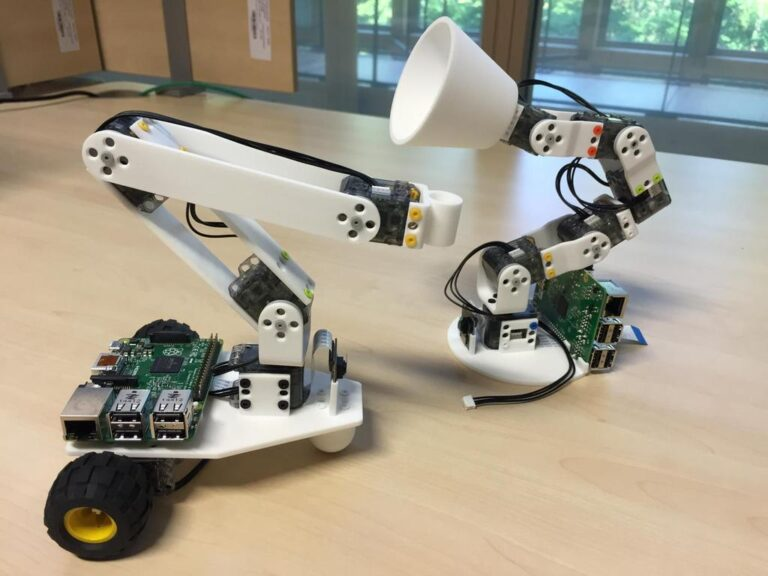
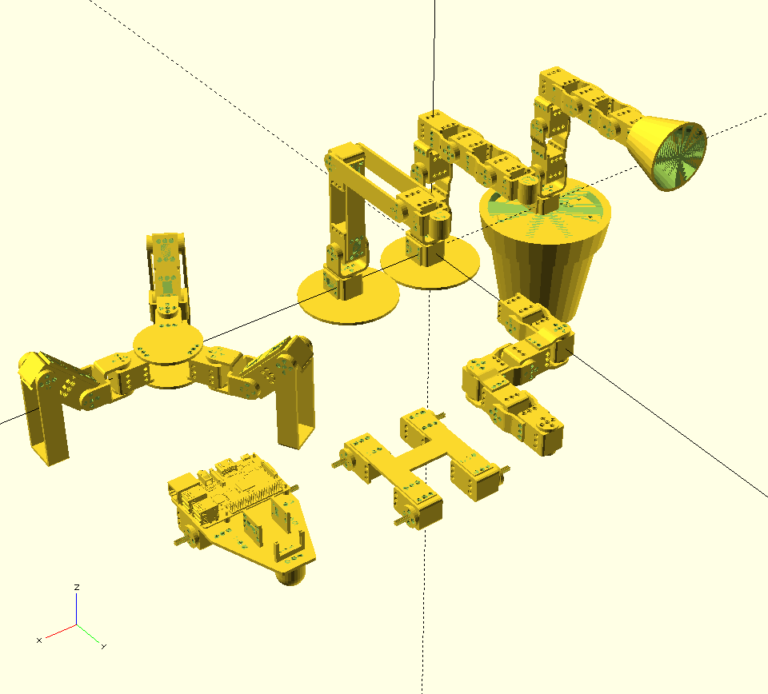

Parametric Parts
Published:
Parametric Parts
I designed a set of libraries in OpenScad allowing to quickly design 3D printable robotic parts for the Poppy Project.
 The first ErgoJr robot, designed from parametric parts.
The first ErgoJr robot, designed from parametric parts.
Poppy creatures are built from XL320 motors from Robotis. Motors are linked together with parametrable frames that I designed with OpenScad. The resulting robots are controlled using the pypot library, typically running on a Raspberry Pi. These robots aim at being low cost and easy to modify.
 Robots built using parametric parts.
Libraries
OpenScad libraries for parametric parts:
Robots
Example of robots made with the parametric part libraries:
 The family of Poppy mini-creatures.
The poppy-ergo-jr and poppy-ergo-starter robots started with parametric parts. Their latest version is now made with onshape by Matthieu Lapeyre. See the hardware/README.md file of each repo to find back the openscad version.
Contribute
Our robots are all open-source, you are welcome to contribute!